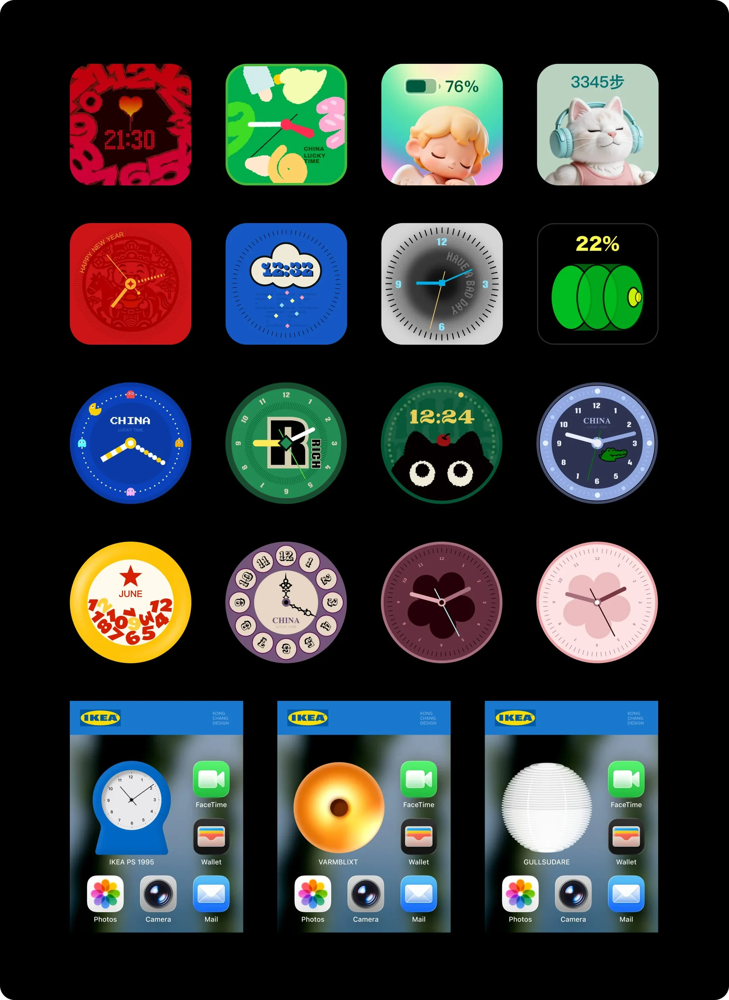

项目概览
时间与类型
时间周期：2025-2026
我的角色
我的角色：原创设计师，负责设计内容并在小红书平台发布，为 iScreen 平台已上架的小组件作品引流，并探索设计产品的商业化与外部合作机会。

时间周期：2025-2026
我的角色：原创设计师，负责设计内容并在小红书平台发布，为 iScreen 平台已上架的小组件作品引流，并探索设计产品的商业化与外部合作机会。
已上架分发：在 iScreen 平台完成多个小组件 / 表盘设计并上线，覆盖时间 / 天气 / 个性化桌面等场景。
有用户使用和反馈：用户自发使用、收藏与传播，个别设计形成“系列化复用”。
设计产品商业化：计划使用 Vibe Coding 制作自己的小组件 App，逐步形成独立推广平台。

宜家风格小组件创意尝试获得小红书社区用户较高关注与二次传播（涉及版权未商业化）。
华为主题商店方向的商务 BD 主动沟通入驻合作。
硬件表盘方向曾有厂商就设计方案与合作报价进行咨询。
在这个过程中，我逐渐把工作从“视觉设计输出”扩展为包含交互结构、主题系统、适配规则与分发策略的轻量产品设计探索。
当前已在平台完成初步分发与验证，具备一定用户使用基础与外部合作意向，但整体仍处于早期探索阶段，后续仍需在产品化、平台合作与规模化分发上持续投入。